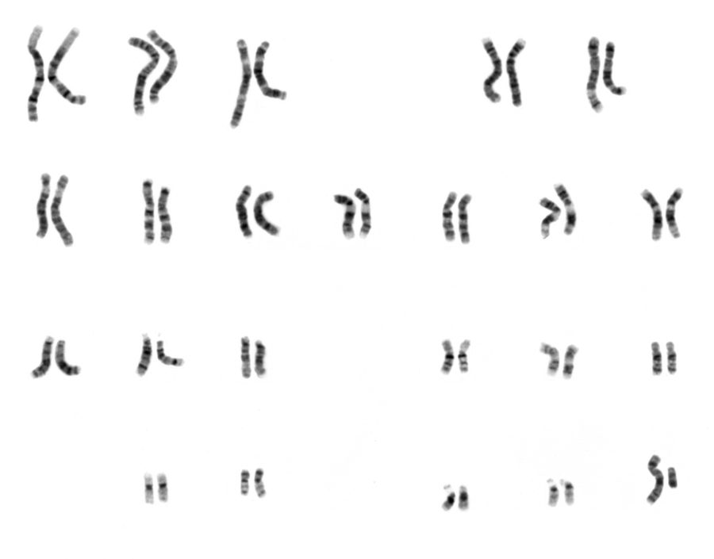
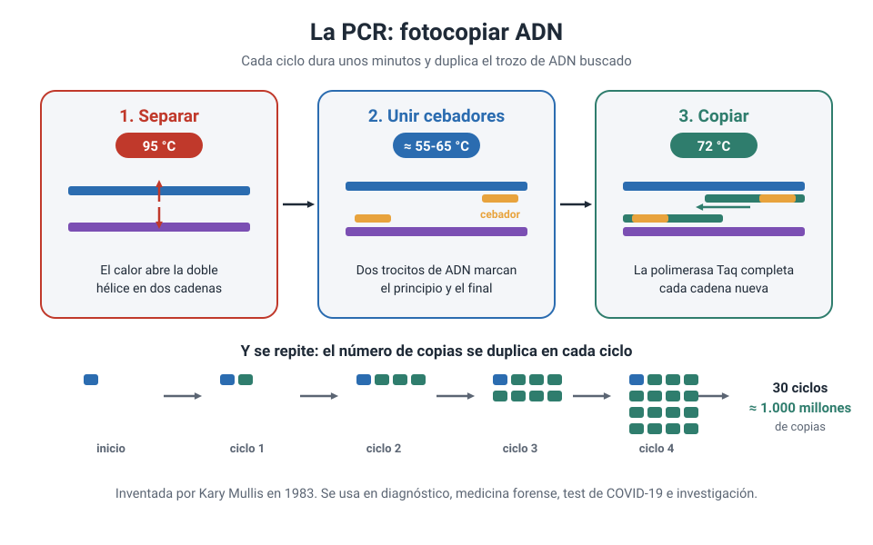

Información divulgativa. No sustituye la valoración de un profesional sanitario ni el consejo genético.
En pocas palabras
Una prueba genética analiza el ADN, los cromosomas o, a veces, las proteínas para buscar cambios relacionados con una enfermedad. No hay una prueba que lo vea todo: cada técnica mira el genoma con un "zoom" distinto. Elegir bien depende de la pregunta que se quiere responder.
| Técnica | Qué ve | Ejemplo de uso |
|---|---|---|
| Cariotipo | Cromosomas enteros y grandes reordenamientos | Síndrome de Down, translocaciones |
| FISH | Una región concreta con una sonda fluorescente | Confirmación rápida de una deleción conocida |
| Array (CGH o SNP) | Pérdidas o ganancias de fragmentos (CNV) | Discapacidad intelectual, malformaciones |
| PCR y técnicas dirigidas | Una variante o repetición concreta | Huntington, X frágil, variante familiar |
| Secuenciación de Sanger | Un gen o fragmento, letra a letra | Confirmar una variante |
| Paneles, exoma, genoma | De decenas de genes a todo el genoma | Enfermedades raras, cáncer hereditario |


Según para qué se hacen
- Diagnósticas: confirman o descartan una enfermedad en una persona que ya tiene síntomas. Por ejemplo, estudiar el gen CFTR en un niño con test del sudor alterado.
- Predictivas o presintomáticas: en personas sanas con antecedentes familiares, para saber si han heredado una variante que causa una enfermedad de aparición tardía, como la enfermedad de Huntington, o que aumenta el riesgo, como BRCA1.
- De portadores: identifican a personas sanas que llevan una copia de una variante recesiva y podrían transmitirla.
- Prenatales: durante el embarazo, sobre el feto, a partir de la placenta (biopsia corial) o del líquido amniótico (amniocentesis).
- Preimplantacionales: en embriones obtenidos por fecundación in vitro, antes de transferirlos al útero.
- De cribado: se ofrecen a toda una población para detectar a quienes tienen más riesgo, como la prueba del talón.
- Farmacogenéticas: predicen cómo responderá una persona a un medicamento.
- Del tumor: buscan cambios adquiridos en las células del cáncer para elegir tratamiento. No informan, en principio, de lo que se hereda.
Según la técnica
Citogenética: mirar los cromosomas
El cariotipo consiste en cultivar células (normalmente de sangre), detenerlas cuando los cromosomas están condensados, teñirlos y ordenarlos por parejas. Detecta cromosomas de más o de menos (como la trisomía 21) y grandes reordenamientos. Su resolución es baja: solo ve cambios de varios millones de bases.
La FISH (hibridación in situ fluorescente) usa sondas que brillan al unirse a una región concreta. Es rápida y útil para confirmar una sospecha, pero solo mira donde se le dice.
Arrays: contar fragmentos
El array de hibridación genómica comparada (array-CGH) o el array de SNP comparan el ADN del paciente con uno de referencia en cientos de miles de puntos. Detectan variaciones en el número de copias (CNV): fragmentos que faltan (deleciones) o sobran (duplicaciones), de tamaño mucho menor que el cariotipo. Es la primera prueba recomendada en niños con discapacidad intelectual, autismo o malformaciones múltiples, porque encuentra la causa en alrededor del 15-20 % de los casos. No ve cambios de una letra ni reordenamientos equilibrados.
Pruebas moleculares dirigidas
La PCR y sus variantes amplifican una región concreta. Se usan para buscar una variante ya conocida en la familia, medir repeticiones (enfermedad de Huntington, X frágil, distrofia miotónica) o detectar deleciones frecuentes (atrofia muscular espinal). La MLPA cuenta copias de exones concretos y es la técnica de elección para las deleciones del gen de la distrofina.
Secuenciación
- La secuenciación de Sanger lee un fragmento de ADN letra a letra. Es muy precisa, pero lenta para muchos genes. Hoy se usa sobre todo para confirmar.
- La secuenciación masiva (también llamada de nueva generación o NGS) lee millones de fragmentos a la vez. Permite analizar paneles de genes, el exoma (las partes de los genes que fabrican proteínas) o el genoma completo. Lo explicamos en Paneles, exoma y genoma.
- La secuenciación de lectura larga lee fragmentos de miles de bases y empieza a resolver regiones repetitivas y reordenamientos complejos que se escapan a las técnicas anteriores.
Pruebas bioquímicas
No todas las pruebas "genéticas" miran el ADN. La medida de una enzima o de un metabolito (la fenilalanina en la fenilcetonuria, la CK en las distrofias, el cloruro en el sudor) a menudo orienta o confirma el diagnóstico.

Muestras
La mayoría de los estudios se hacen con sangre. También se puede usar saliva, raspado de la mucosa de la boca, biopsia de piel (para cultivar células) o tejido. En el embarazo, vellosidades coriales o líquido amniótico, y cada vez más el ADN fetal libre que circula en la sangre materna. En cáncer, tejido tumoral o la llamada biopsia líquida (ADN del tumor en la sangre).
Lo que una prueba no puede hacer
- Un resultado negativo no siempre descarta una enfermedad genética. Puede que la causa esté en un gen no analizado, en una región difícil de leer o que se trate de un tipo de cambio que la técnica no detecta.
- Una variante de significado incierto no es un diagnóstico.
- Encontrar una variante de riesgo no significa que la enfermedad vaya a aparecer: muchas tienen penetrancia incompleta.
- Ninguna prueba mide el efecto del ambiente, los hábitos o el azar.
- Un análisis amplio puede dar hallazgos secundarios: información no buscada, por ejemplo una variante de riesgo de cáncer en un estudio hecho por otro motivo. Antes de la prueba debe acordarse qué se quiere saber.
Cómo se elige
La elección la hace un profesional con experiencia en genética, a partir de la historia clínica y familiar. Algunos principios:
- Ir de lo más probable a lo más amplio: si la sospecha es concreta, una prueba dirigida es más rápida, barata y clara.
- Empezar, si es posible, por el familiar afectado: un resultado positivo en él permite luego estudios sencillos y fiables en el resto.
- Explicar antes qué puede y qué no puede aportar la prueba, y obtener el consentimiento informado.
En España
Las pruebas genéticas con indicación clínica se piden desde las unidades de genética clínica y las consultas especializadas del Sistema Nacional de Salud. En 2023 se aprobó la cartera común de servicios de genética del SNS, que regula qué pruebas se ofrecen y en qué situaciones. En 2024 se creó oficialmente la especialidad médica de Genética Clínica. La Ley de Investigación Biomédica (14/2007) exige consentimiento por escrito y consejo genético en los análisis con fines de salud.
Ver también: Paneles, exoma y genoma, Cómo leer un resultado genético y Consejo genético.
Fuentes
- Ley 14/2007, de 3 de julio, de Investigación biomédica. BOE núm. 159, de 4 de julio de 2007.
- Orden SND/606/2023, de 9 de junio, por la que se modifica la cartera común de servicios del Sistema Nacional de Salud en materia de genética. BOE, 2023.
- Miller DT, Adam MP, Aradhya S, et al. Consensus statement: chromosomal microarray is a first-tier clinical diagnostic test for individuals with developmental disabilities or congenital anomalies. Am J Hum Genet. 2010;86(5):749-764. doi:10.1016/j.ajhg.2010.04.006
- National Human Genome Research Institute. Genetic testing FAQ.
- MedlinePlus Genetics. What are the types of genetic tests?